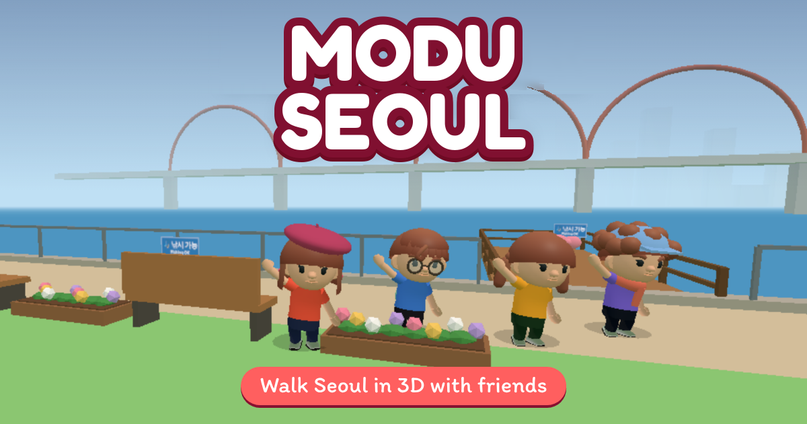

Modu Seoul
A 3D virtual trip to Seoul, Korea, that you play right in your web browser. No download, no install.

Walk the streets of Seoul
Start in Seongsu-dong, the neighbourhood of cafés, pop-up stores and old brick factories, then take the subway or a taxi to Hongdae and Itaewon. The streets are a game map inspired by the real neighbourhoods, with street names in Korean and a Translate button.
Shop, eat and play
Walk into fashion, beauty and lifestyle stores, try clothes on your character and fill a virtual shopping bag. Sit in cafés, pat the cats at a cat café, order snacks in Korean at a bunsik snack bar, rent a bike and finish daily missions to collect stamps and coins.
Travel together
See other travellers in real time, wave with emotes and chat with people near you. Make your own character and keep your progress by signing in.
Before your real trip
Learn how a Korean street looks and sounds, practise simple Korean phrases with romanization and English, and get to know the neighbourhoods you want to visit.
The game is available in English, Español, 한국어, 简体中文, 繁體中文, Bahasa Indonesia, Tiếng Việt, हिन्दी, العربية and 日本語. You choose your language on the first screen.
Works on PC (keyboard) and on phones and tablets (touch).
All shops, brands and products in the game are fictional samples, not real businesses. Shopping is virtual: no real payment.
Map data © OpenStreetMap contributors · Privacy · Terms